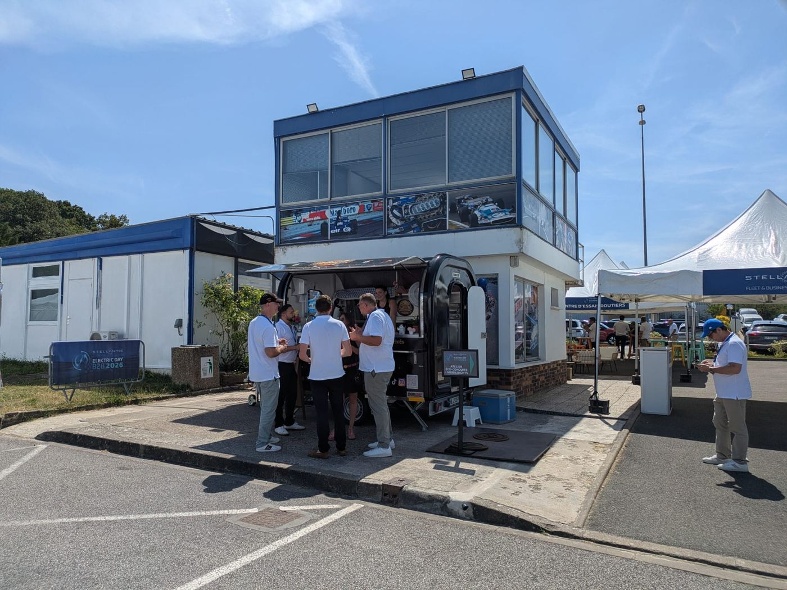

Yvelines · Hauts-de-Seine · Île-de-France
Des stroopwafels hollandais,
une touche française.
Gaufres au sirop de caramel faites à la commande, sandwichs gourmands aux produits locaux — servis depuis notre food truck, sur les marchés comme dans vos jardins.
Le concept
La stroopwafel, telle qu'on la fait à Amsterdam — cuite devant vous.
TIMOU est né de la rencontre entre la France et les Pays-Bas. Chaque stroopwafel de 13 cm est pressée et garnie à la commande : caramel coulant, éclats de spéculoos ou de pistaches torréfiées, chamallows, fruits frais. À côté, nos sandwichs gourmands mettent en avant des produits locaux français.
Notre food truck — une remorque artisanale équipée sur mesure — se déplace sur les marchés, chez les entreprises et dans les jardins privés à travers l'Île-de-France.


Où nous trouver
Sur les marchés d'Île-de-France, toute l'année.
TIMOU est présent en itinérance dans les Yvelines (78) et les Hauts-de-Seine (92) : marchés hebdomadaires, places de village, animations commerçantes. Suivez nos réseaux pour connaître nos emplacements de la semaine.
Yvelines
Marché Notre-Dame à Versailles, marché des Avelines à Saint-Cloud, et prospection continue sur les communes environnantes.
Hauts-de-Seine
Marchés d'Issy-les-Moulineaux — Corentin Celton, Épinettes, République, Sainte-Lucie — et alentours.

Événements
Entreprises, mariages, jardins privés : on installe le comptoir chez vous.
TIMOU intervient pour vos événements d'entreprise, séminaires, fêtes privées et réceptions dans un jardin. Formule service + consommation adaptée au nombre d'invités, sur toute l'Île-de-France.
- Entreprises & comités d'entreprise
- Mariages & fêtes privées
- Jardins privés
- Salons & événements de marque



Contact
Une question, une demande de devis ?
Écrivez-nous ou appelez directement — on vous répond vite.